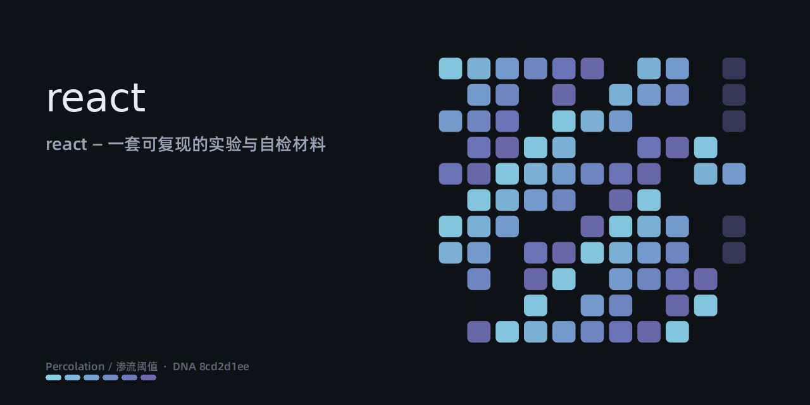

react — 一套可复现的实验与自检材料
母题 Percolation / 渗流阈值 · 视觉 DNA 8cd2d1eef7b7
形象由仓库标识的哈希确定性派生——同一个仓库永远生成同一张脸，不每次重画。

六个状态，颜色与呼吸节奏各不相同；动画为 SVG 内嵌 CSS，无 JavaScript。
| 状态 | 节奏 | 含义 |
|---|---|---|
| 静置 · idle | 4s 慢呼吸 | 冷色低亮度 |
| 推演 · thinking | 0.8s 快脉冲 | 琥珀偏移 |
| 执行 · busy | 持续旋转 | 亮度拉高 |
| 受阻 · blocked | 脉冲冻结 | 低饱和红 |
| 失败 · error | 红色 | 一次抽动后静止 |
| 达成 · success | 短暂暖脉冲 → 回落 idle | 短暂暖脉冲 → 回落 idle |
python3 facade.py --repo owner/name --out ./assets
产出：social-preview.png(1280×640) · identity.svg(1200×420) · states.svg · README_SNIPPET.md · 本页